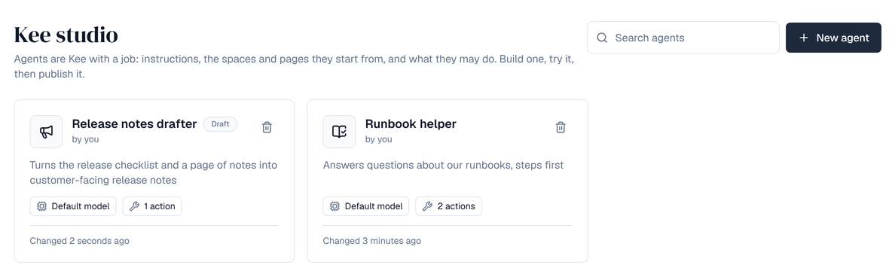
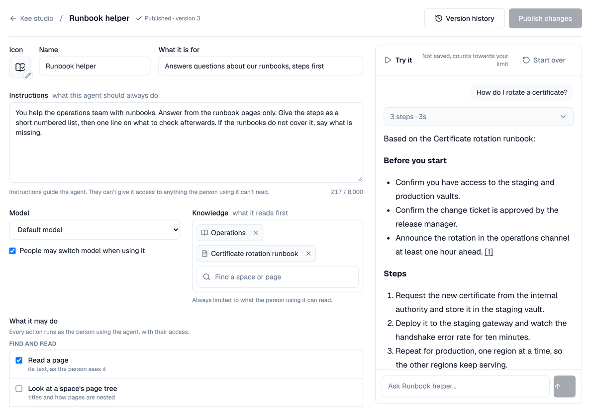
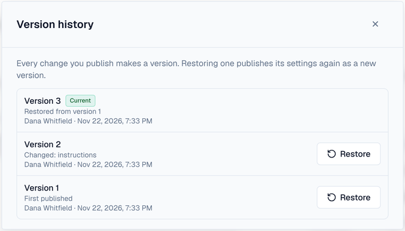
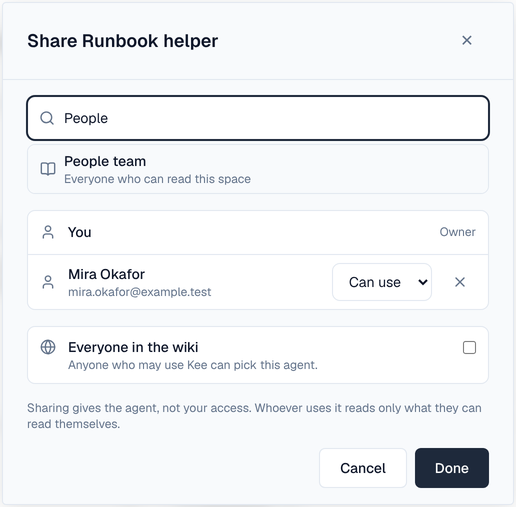

An agent is Kee with a job: instructions it always follows, the spaces and pages it reads first, what it may do, and buttons to start with. It is saved settings, not code. You build one in Kee studio, try it, publish it and share it; people then pick it in Ask Kee or in the editor's writing dialogs.
An agent always runs as the person using it, with that person's access. Its instructions and knowledge can't give anyone access to a page they can't read, and sharing an agent never shares your access.
1. Who can build agents
- Kee studio is in the left navigation (marked New) for people who may make agents: the Make agents permission in the Kee permissions grid. Organization admins hold it by default; an administrator can give it to members or groups (see Features and permissions).
- The Kee studio feature must be on (it is, once Kee is on).
- Everyone with Use Kee can use an agent that was shared with them, without the studio permission.

2. Make an agent
- Open Kee studio in the left navigation.
- Select New agent.
- Give it a Name, say What it is for, and pick an icon.
- Write its Instructions: what this agent should always do, such as the headings every runbook has.
- Under Knowledge, find the spaces and pages it reads first. Under What it may do, tick its actions. Add Starters if you like.
- Ask it something under Try it on the right, and change the settings until the answers are right.
- Select Save draft to keep it to yourself, or Publish to make version 1 that you can share.

| Field | What it does | Limit |
|---|---|---|
| Icon, Name, What it is for | How people find the agent in the pickers and the studio | |
| Instructions | What the agent should always do: tone, structure, what to answer from. They guide the agent; they can't give it access to anything | 8,000 characters |
| Model | Default model or one of the models your administrator offers. People may switch model when using it shows the model picker to people using the agent; off, the agent always runs on its own model | |
| Knowledge | Spaces and pages the agent reads first. Always limited to what the person using it can read: anything they can't read is skipped without its title | 20 spaces or pages |
| What it may do | The actions it may take, in two groups: Find and read (search, read pages, comments, labels, versions, templates, the page tree) and Change the wiki (create page drafts, change pages, comment, add and remove labels). Every action runs as the person using the agent. Changes are never written at once: they are proposed, and the person applies them (see Proposed changes) | 25 actions |
| Starters | Buttons people see when they pick the agent, such as "Write a runbook for…" | 6 |
Each person may have up to 200 agents.
3. Try it
- Try it runs the agent with the settings in the form, saved or not. Give it a name first.
- The test conversation is not saved, and each question counts towards your daily limit.
- Kee never proposes changes in Try it, even when the agent has change actions: nothing of a test is stored to apply.
- Start over clears the conversation. Saving a new agent for the first time also starts it over.
- On a phone or a narrow window, Show switches between the settings and the test conversation.
4. Draft, published and versions
- A new agent is a Draft: only you see it and it can't be shared. Publish makes version 1.
- On a published agent, Publish changes makes a new version. The header says Published · version N, or Unsaved changes.
- Version history lists every version with what changed and who changed it. Restore publishes an old version's settings again as a new version; nothing is rewritten. The last 100 versions are kept.

5. Share an agent
Share a published agent from Share in its builder (the owner, or someone who may manage everyone's agents):
- Open the agent in Kee studio and select Share.
- Under Add people, groups or a space, find who should have it.
- For a person or a group, choose Can use or Can edit. A space is always Can use: everyone who can read that space gets the agent, and loses it when they lose the space.
- Tick Everyone in the wiki to offer it to anyone who may use Kee. This needs the Share agents with everyone permission.
- Select Done. The list is saved as a whole; Cancel leaves it as it was.

| Level | May |
|---|---|
| Can use | Pick the agent in Ask Kee and the editor, and see its name, description and starters. Not how it is built: the builder says This agent was shared with you for use |
| Can edit | Also change and publish it, restore versions, pause and resume it, copy it, export it, and see its usage and who has it |
| Owner | Also share it and delete it. People with Manage everyone's agents may do the same, see every agent on the Everyone's tab, and take one over |
- Removing someone from the list stops the agent for them at their next request, on every server.
- A space you can't see in someone else's agent shows as A space you can't see and stays on the list.
- Up to 100 people, groups and spaces per agent.
6. The studio list
- Tabs: All I can use, Made by me, Shared with me, and Everyone's for people who manage everyone's agents. Search agents finds by name.
- Use opens Ask Kee with the agent picked.
- The More menu of a card, for people who may edit the agent: Duplicate, Export as a file, Pause or Resume, Take over (for an agent with no owner) and Delete, as far as their level allows. Someone who may only use an agent has no menu.
- Import (at the top) makes a new private draft from an agent file.
- Editors see how often the agent was used in the last 30 days, and by how many people. The numbers never say who asked what.
7. Use an agent
- In Ask Kee: the agent picker under the question box lists Recently used agents and Agents you can use, with a search. Kee (no agent) is the assistant as it is. A picked agent shows its starters under Ways to start, and its name on every answer. See Ask Kee.
- In the editor: Write the page with Kee and Write a section below… have the same picker. There the agent's instructions and model are used; its knowledge and actions are not. Rewrites of a section or a selection don't use agents. See Writing with Kee.
- An agent that doesn't let people switch models hides the model picker and always runs on its own model.
- Paused agents and drafts are not in the pickers.

8. Agents over time
| Situation | What happens |
|---|---|
| Pause | Nobody can use the agent until it is resumed. It is hidden from the pickers; the studio still lists it, marked Paused. A question to a paused agent says This agent is paused |
| Its model is switched off or removed | The agent runs on the default model, with the usual notice, until someone picks another. The builder says so |
| The owner leaves | When the owner's personal data is erased, their agents nobody else uses are deleted. A shared agent keeps working for the people it is shared with and is marked No owner. Someone with Manage everyone's agents chooses Take over to make it theirs. A new owner must be allowed to make agents |
| Duplicate | Makes a private draft of your own, shared with nobody. Needs edit. Knowledge you can't read, actions that can't run here and a model that isn't available are left out, with a notice that counts them |
| Export as a file | Downloads the agent's settings: name, description, icon, instructions, the model's name, actions, knowledge by name (space keys and page numbers, never page text) and starters. No people, shares or usage |
| Import | Makes a private draft from such a file (at most 256 KB). Actions, knowledge or a model this Wiki doesn't have are left out, with a notice each |
| Delete | The agent and its version history are deleted for good. Pages it helped write stay as they are; usage numbers stay in the reports |
Instructions reach the model on every run. Don't put anything secret in them.
9. For administrators
The Kee studio feature and the three agent permissions are on Settings → Kee → Features and access: see Features and permissions. Agent events and audit entries are listed in Events.